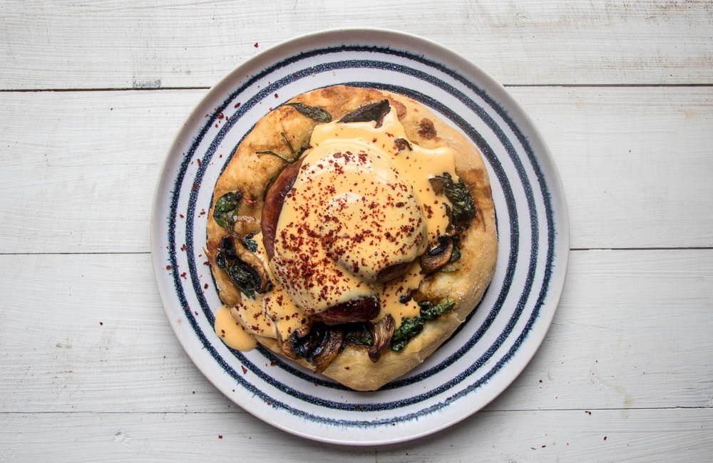

Behold! This is the Deadly recipes we've accquired
through our journey!

Brunch Sausage Flatbread with Dairy Free Hollandaise
Ingredients
- 450g strong flour
- 10g dried yeast
- 300ml just warm water
- 25ml extra virgin olive oil
- A generous pinch of sea salt per flatbread
- One spiral sausage like cumberland, or two sausages of your choice
- A handful of washed spinach or other greens
- Three mushrooms, sliced finely
- Dairy free lemon hollandaise
- 2 egg yolks
- Juice of half a lemon
- 50ml coconut oil
- Salt to season
- Chilli flakes - I use Korean chilli which is sweet and not too hot, as I do often
Instructions
STEP 1 : Heat the oven to 356°F. Line a baking sheet with parchment paper.
STEP 2: Sift the matcha into the sugar and stir to mix. Place the egg whites in the bowl of a mixer and mix on low until bubbly. Turn the mixer to high and when soft peaks start to form, add the sugar in gradually, tablespoon by tablespoon. Whip until thick and glossy, about 10 minutes. Take a bit of egg between your fingers and rub. The sugar should be dissolved and you should feel no grittiness. If you can still feel the sugar, whip until the sugar dissolves, another minute or so. Sift in the cornstarch and sprinkle on the vinegar and vanilla. Whisk until just combined.
STEP 3: Mound the meringue onto the parchment paper, in a round shape. Place in the oven and immediately turn the oven down to 248°F. Bake for an hour then turn off the oven and let cool completely.
STEP 4: When ready to serve, whip the cream into soft peaks. I deconstructed my pavlova just because I thought it was prettier that way, but you can keep yours whole. Top the pavlova with a generous amount of softly whipped cream, pomegranate seeds, and mint leaves. Enjoy immediately.